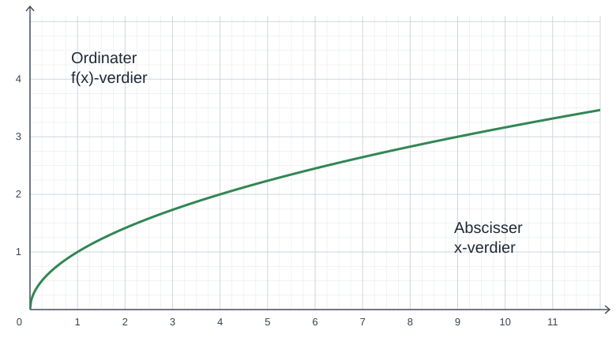
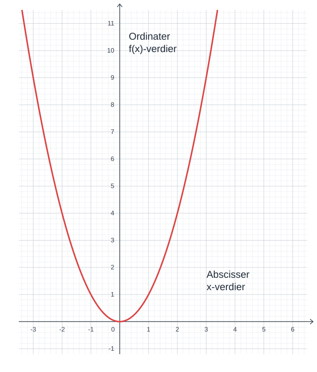

Funksjoner
1. Generelt og begreper
En funksjon er en regel som gjør om et tall til et annet tall.
Kvadratrotknappen på kalkulatoren fungerer som en funksjon. Den gjør for eksempel \(9\) om til \(3\) og \(49\) om til \(7\).
Et regneprogram, for eksempel et vi lager i Scratch, er også en funksjon.
La oss se på dette regneprogrammet:
- Velg et tall.
- Opphøy tallet i andre.
- Trekk fra \(9\).
- Ta kvadratroten av resultatet.
Dette er en funksjon som vi kan kalle \(f\). Vi skriver:
Det leses slik: Når vi setter inn et tall \(x\) i funksjonen \(f\), får vi \(\sqrt{x^2-9}\).
Tallene vi starter med, kalles x-verdier. Tallene vi får som resultat, kalles funksjonsverdier. Vi kan vise det med denne enkle tegningen:
Vi bruker igjen funksjonen \(f(x)=\sqrt{x^2-9}\). For å finne funksjonsverdien når \(x=5\), setter vi inn \(5\) i stedet for \(x\):
Funksjonsverdien når \(x=5\), er altså \(4\). Vi kan også si at \(5\) er en x-verdi som gir funksjonsverdien \(4\).
Én x-verdi kan bare gi én funksjonsverdi. Men flere forskjellige x-verdier kan gi samme funksjonsverdi!
Med \(f(x)=\sqrt{x^2-9}\) har vi allerede sett at \(f(5)=4\). Men vi har også:
Funksjonsverdien \(4\) kan altså komme fra to x-verdier: \(-5\) og \(5\).
Noen funksjoner kan ikke brukes på alle tall. Alle tallene vi kan sette inn i en funksjon, utgjør funksjonens definisjonsmengde.
Hvis \(g(x)=\dfrac{1}{x}\), kan vi ikke regne ut funksjonsverdien når \(x=0\), for da ville vi fått \(\dfrac{1}{0}\), som ikke finnes. Vi sier at \(g\) ikke er definert for \(x=0\).
Hvis \(h(x)=\sqrt{x}\), kan vi ikke finne funksjonsverdien for negative tall. Definisjonsmengden er derfor alle tall som er større enn eller lik \(0\).
For å få oversikt over en funksjon kan vi samle x-verdier og funksjonsverdier i en tabell.
Vi tar en enkel funksjon: \(f(x)=2x-5\). Da kan vi lage denne tabellen:
| x-verdi | \(-3\) | \(-1\) | \(0\) | \(3\) | \(5\) |
|---|---|---|---|---|---|
| f(x)-verdi | \(-11\) | \(-7\) | \(-5\) | \(1\) | \(5\) |
Legg merke til at dette ikke er en proporsjonalitetstabell.
2. Grafer
En verditabell har fort sine begrensninger, siden vi ikke kan ta med så mange verdier. Derfor er det ofte bedre å tegne en graf. Grafer kan se veldig forskjellige ut: rette linjer, parabler, hyperbler og mye annet.
Under har vi tegnet grafen til funksjonen \(f(x)=\sqrt{x}\). Vi har brukt noen enkle punkter: \(\sqrt{0}=0\), \(\sqrt{1}=1\), \(\sqrt{4}=2\) og \(\sqrt{9}=3\).

For å finne funksjonsverdien for et tall på en graf, finner vi tallet på x-aksen og ser hvilken y-verdi grafen har der.
På grafen over kan vi se at funksjonsverdien når \(x=6\), altså \(\sqrt{6}\), er omtrent \(2{,}4\).
Her har vi tegnet grafen til funksjonen \(g(x)=x^2\).

For å finne hvilken eller hvilke x-verdier som gir en bestemt funksjonsverdi, finner vi først funksjonsverdien på y-aksen. Deretter ser vi hvor grafen har denne høyden, og leser av de tilhørende x-verdiene.
På grafen over ser vi at funksjonsverdien \(6\) kommer fra to x-verdier: omtrent \(-2{,}4\) og \(2{,}4\). Funksjonsverdien \(-1\) kommer derimot ikke fra noen x-verdi.
Vi ser igjen på grafene at én x-verdi ikke kan gi mer enn én funksjonsverdi, mens samme funksjonsverdi godt kan komme fra flere x-verdier.